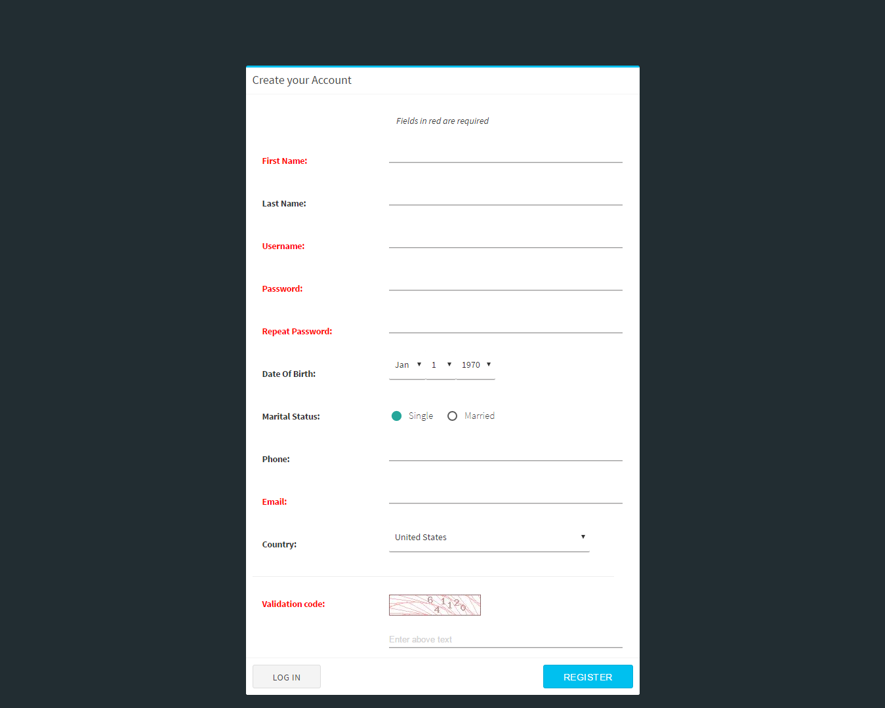
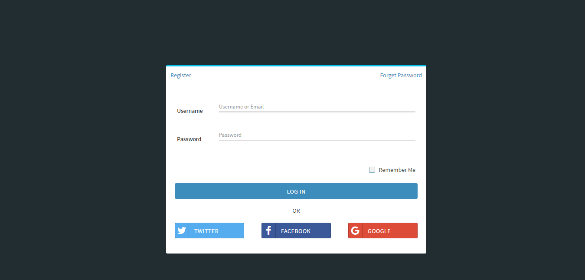
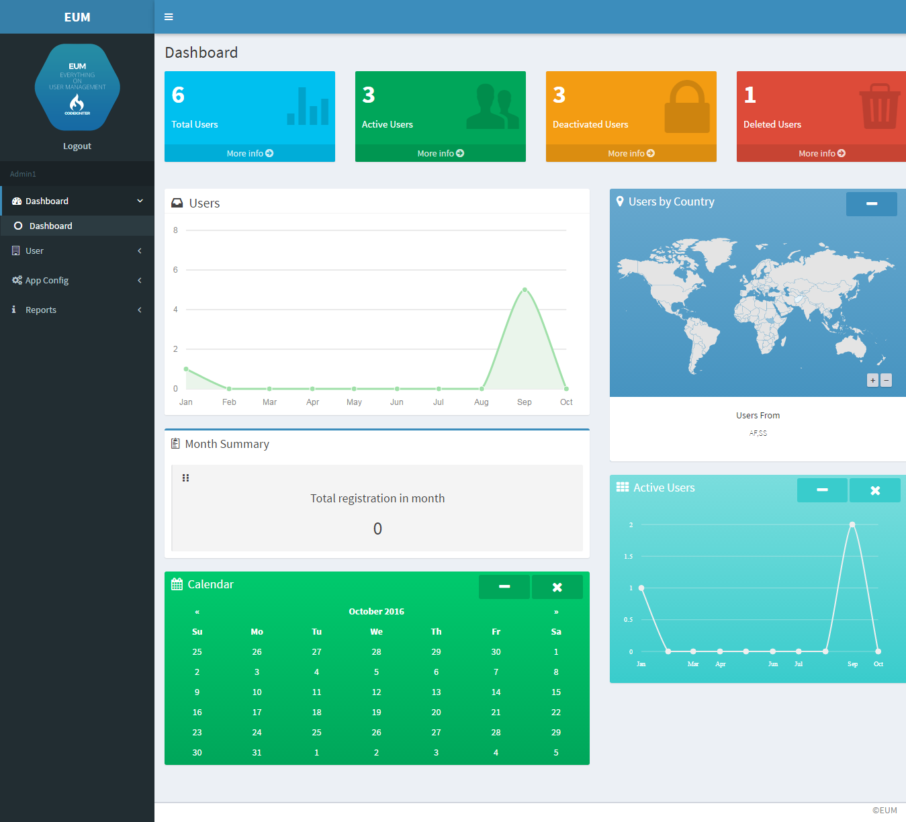
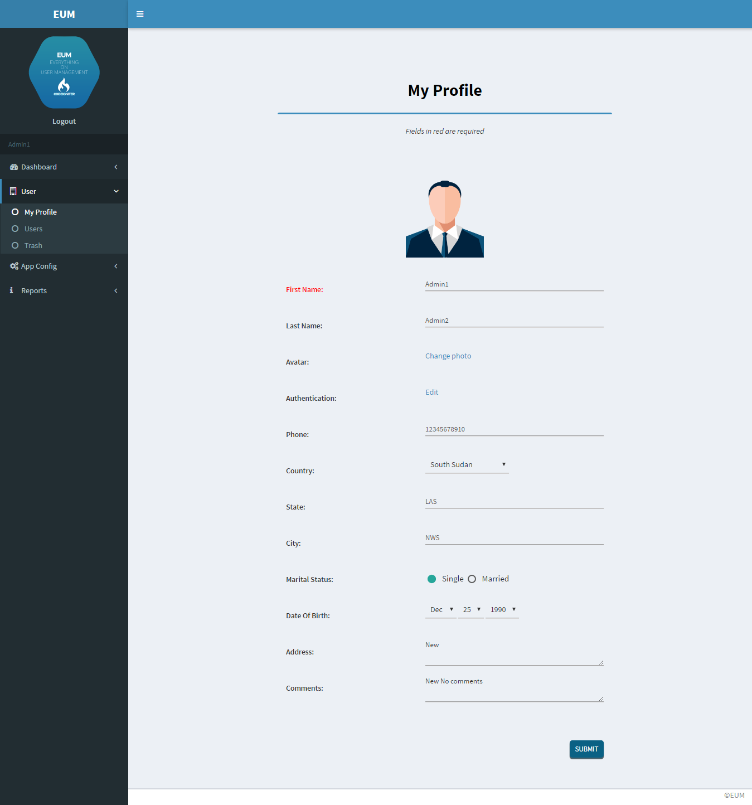
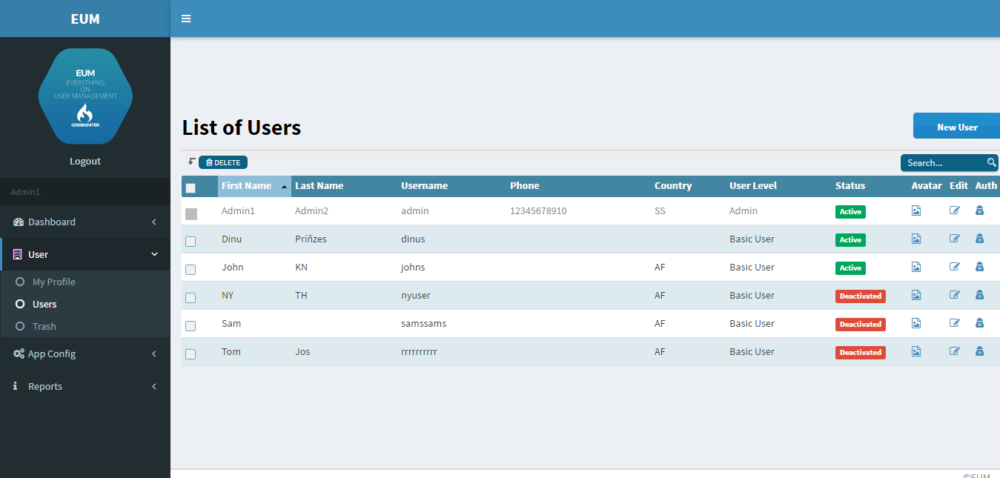
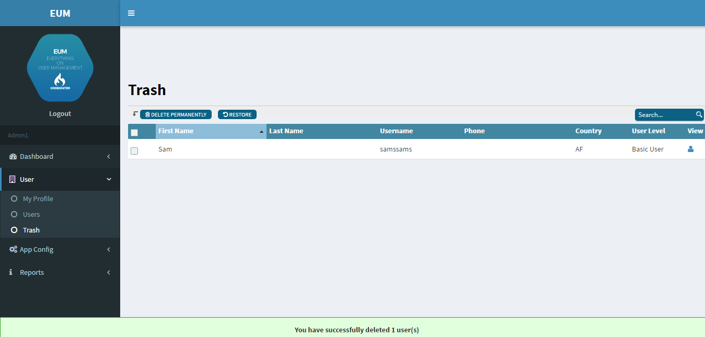
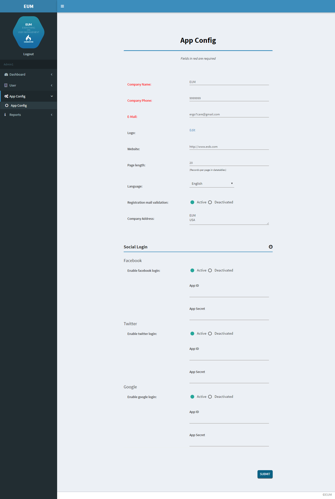
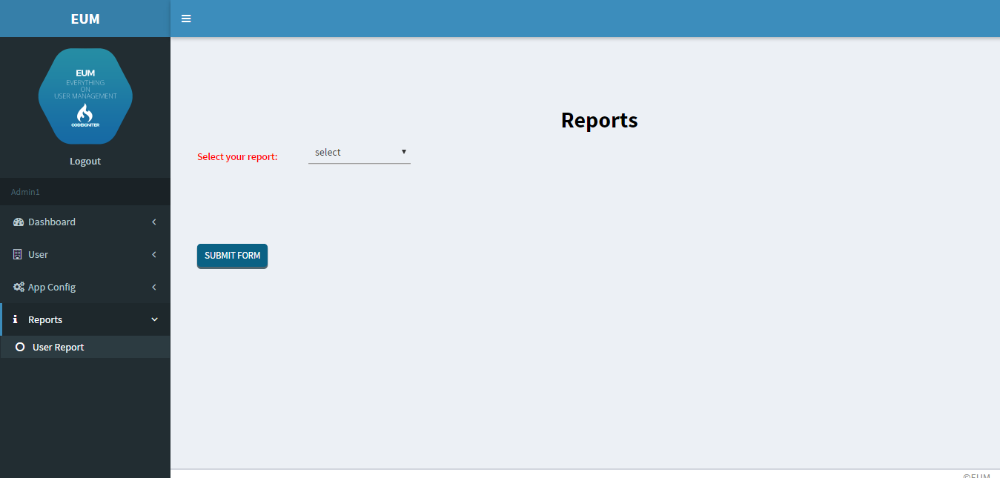
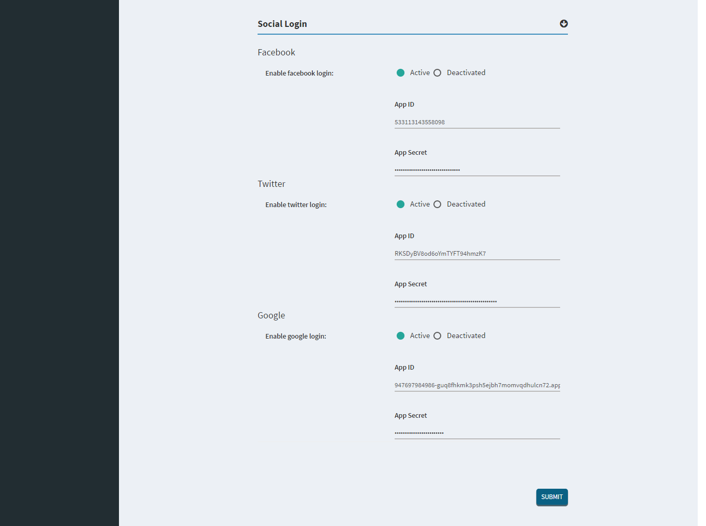

EUM is a PHP application built up around the CodeIgniter framework(version 3.1.0), that allowing the registration and administration of users.It can be used as a base platform for any CodeIgniter based web applications. Its provide secure login, authentication, authorization and complete user management.
If you already have an existing PHP application, and you want to add user login, registration and user role management features,then you need to move your application to CodeIgniter framework and incorporate it inside EUM application.EUM is HMVC based.So you can easily do this.
Thank you for purchasing our software. If you have any questions that are beyond the scope of this help file please feel free to contact us at ergo. Thank you so much for purchasing one of our products!
Registration form

-
Login form
Enter your email and password and click log In button. Now you can see the dashboard.

-
Dashboard
In your dashboard you can see all information in simple way.

-
Profile
Here you can edit your profile details

-
User Management(search,delete,activate/deactivate,permission)
Add User
To add a new user, click on the "Add" button on the right. A new pop-up window will open.
Fill the fields and submit the form.You should fill all required fields.
Edit User
For edit each user click the edit button on the right of the row.You can also set different user permissions in here.
Delete User
For delete user you have to select the user from the list and then click on the "Delete" button on the top of the table.
Search User
User table contain a search field at the top of the table.You can search a user with username/email or phone.
Edit Avatar
Every user is able to set his profile avatar from their profile page or by click the image icon in user list .

-
Trash
You can undo deleted users from trash

-
App configuration
To edit you app details go to "app config" module, You can enable/disable mail confirmation on registration in here.You can also change you app logo here.Page length option provided in the config page helps to set the records per page in datatables like user list,trash,reports etc.

-
Reports
Select the type of report and submit the form.

Social Authentication
If you want to allow social authentication for your users,then you can enable this in appconfig settings. EUM supports Facebook, Twitter and Google+ by default.

Facebook
Register a new application at Facebook App Creation .
Please refer https://developers.facebook.com/docs/apps/register for detailed explanation.
After you create an application,find your App Id and App Secret keys on your application's Dashboard. Those keys should be entered into facebook App Id and App Secret in config page of EUM
Twitter
To use Twitter authentication go to Twitter Application Management and click Create New App button at the top right corner. Then fill all required fields and click Create your Twitter Application button at the bottom of the page.
Your Callback URL for twitter is
http://YOUR_DOMAIN/index.php/login/endpoint?hauth.done=Twitter
After application is created, update the twitter Keys and Access Tokens in app config page
Google
For Google+ Authentication,
- Go to the Google Developers Console https://console.developers.google.com/projectselector/apis/library.
- From the project drop-down create a new one by selecting Create a new project.
- Enable the Google+ API service:
- In the list of Google APIs, search for the Google+ API service.
- Select Google+ API from the results list.
- Press the Enable API button. Wait for the API to be enabled.
- In the sidebar under "API Manager", select Credentials, then select the OAuth consent screen tab.
Choose an Email Address, specify a Product Name, and press Save.
- In the Credentials tab, select the New credentials drop-down list, and choose OAuth client ID.
- Under Application type, select Web application.
The Authorized JavaScript origins is
http://YOUR_DOMAIN
The Authorized redirect URI field is
http://YOUR_DOMAIN/index.php/login/endpoint?hauth.done=Google.
Press the Create button.
From the resulting OAuth client dialog box, copy the Client ID and Client secret. .
Please refer https://developers.google.com/+/web/samples/php for detailed explanation.
When you have those keys, update the google Keys and Access Tokens in app config page.
Application Structure
This application is built up around the CodeIgniter framework. It's freely available on the internet with full documentation codeigniter.com/user_guide/ . Below is the quick overview of your application directory structure.
- application
This is where the custom application files are kept. It includes the configuration files, the class controllers, models and view files. If you want to make changes to the application, you should modify these files.
- Helper Functions
Helpers, as the name suggests, help you with tasks. Each helper file is simply a collection of functions in a particular category. There are Table Helpers, that assist in creating data tables, there are Report Helpers that help you create form reports
- Languages
You can translate your product into another language by adding or editing the language files. These translations or additional messages would go inside your application/language/ directory, with separate sub-directories for each idiom (for instance, ‘french’ or ‘german’).
- Hooks
CodeIgniter’s Hooks feature provides a means to tap into and modify the inner workings of the framework without hacking the core files.Hooks are defined in the application/hooks directory.
- Libraries
When we use the term “Libraries” we are normally referring to the classes that are located in the libraries directory .The encryption class file "Bcrypt" located in library directory of your application.
- Config
CodeIgniter has a config file that lets you store your database connection values (username, password, database name, etc.). The config file is located at application/config/database.php. You can also set database connection values for specific environments by placing database.php in the respective environment config folder.
- Module
Using the folder modules, we can create different modules inside.Each modules directories contain mini MVC directories
- Model
The Model represents your data structures. Your model classes will contain functions that help you retrieve, insert, and update information in your database.
- View
The View is the information that is being presented to a user. A View will normally be a web page, but in CodeIgniter, a view can also be a page fragment like a header or footer. It can also be an RSS page, or any other type of “page”.
- Controller
The Controller serves as an intermediary between the Model, the View, and any other resources needed to process the HTTP request and generate a web page.
- assets
This folder contain all css,js,images used in the application.
- Adminlte
Adminlte theme files used in the application are stored here.
- Bootstrap
Contain all bootstrap files.
- font-awesome
Font-awesome files.
- CSS
CSS files for the application.
- Images
All images
- Js
Javascript files for the application.
- Captcha
Captcha directory is used for storing temporary captcha images.
- Install
This directory contain the installation files.You can delete this directory after completing installation.
- System
System directory contain codeigniter framework files
- .htaccess
The ENVIRONMENT Constant is set on .htaccess file in the root directory.
- index.php
The index.php serves as the front controller, initializing the base resources needed to run CodeIgniter.
Customisation
Renaming Folders
In codeigniter you can rename or move the SYSTEM or APPLICATION folders.After moving them, open the main index.php file and set the $system_path, $application_folder and $view_folder variables, preferably with a full path, e.g. ‘/www/MyUser/system‘.
$system_path = 'system';
$application_folder = 'application';
$view_folder = '';
The ENVIRONMENT Constant
This can be set to development, test or production.
Setting the ENVIRONMENT constant to a value of ‘development’ will cause all PHP errors to be rendered to the browser when they occur. Conversely, setting the constant to ‘production’ will disable all error output. Disabling error reporting in production is a good security practice.
By default, development mode is set to production.This can be changed, by changing the .htaccess file in the root directory.
Change SetEnv CI_ENV production to SetEnv CI_ENV development in .htaccess file for development purposes.
Security
XSS Filtering
CSRF protection
Password handling
Validate input data
Escape all data
Credits
- CodeIgniter
- AdminLTE
- Materializecss
- Bootstrap
- jQuery
- Thickbox
- Tablesorter
- Jquery-validation
- Nicescroll
- HybridAuthLib